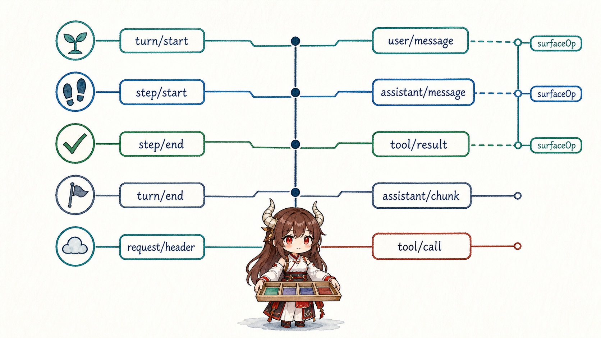
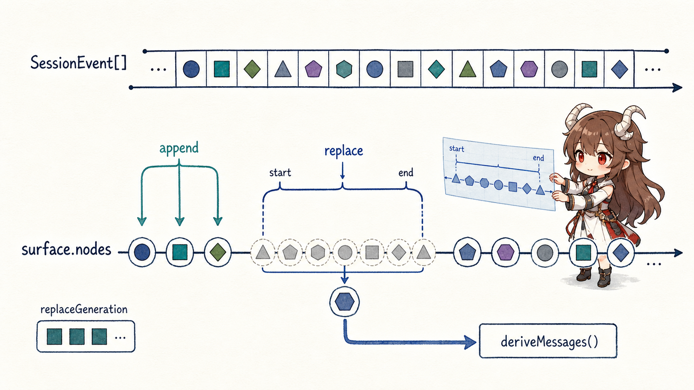
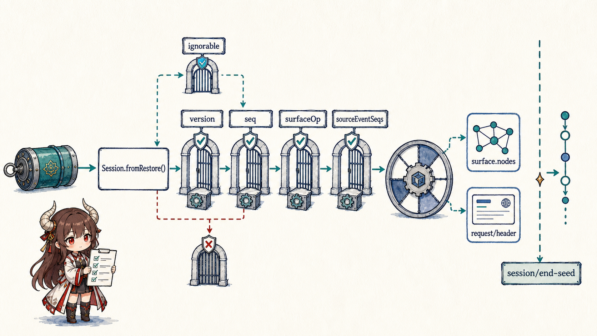

很多 Agent 系统一开始只有 messages.push()。工具状态、token、approval、重试和 UI 进度随后被塞进旁边的 Map；需要恢复时，再猜哪些 Map 能从 messages 重建。DSH 反过来：先把运行事实写入追加日志，模型消息只是其中一个投影。
这不是为了把简单系统复杂化，而是因为一次 turn 同时服务三类消费者。模型只需要规范的 user/assistant/tool messages；人类时间线需要看见原始对话和工具过程；恢复路径还需要 turn/step 边界、request header、错误与 lineage。让它们共用一个数组，迟早会让某个消费者得到多余或缺失的事实。
阅读契约。读完以后，你应该能说明：append() 提交前后分别保证什么；为什么只有三种事件可以携带 surfaceOp；replace 为什么遮蔽模型表面却不删除原始日志；人类 transcript 为什么不能直接读取 current surface；以及未知事件、sourceEventSeqs 和 session/end-seed 如何让恢复失败得更安全。
证据边界。本文固定在提交 b150a55。Session 根包一直负责事件快照、冻结、surface 验证和 seed 接纳；持久化是外部插件。源码能证明内存契约和重建规则，但不能证明某个自定义 backend 已正确实现 durability。
一、Session 是追加事实源，不是可编辑 transcript
1.1 append 先快照，再验证，最后一次提交
Session.append() 不把调用方传入的对象引用直接塞进 log。它先把 data、surface metadata 和 sourceEventSeqs 做 lossless JSON 快照，验证 marker、引用和 replacement coverage，再创建连续的 seq 与时间戳。SurfaceManager 先规划 transition；所有检查通过后，log 和 surface 才同步 commit。
提交后的事件与嵌套 message 会被深冻结，session.events 返回缓存的 frozen snapshot。调用方不能事后修改一个 content block，悄悄改变模型历史却不产生新事件。要改变当前模型表面，只能追加一条明确的 replacement event。
session.append('user/message', message, {
surfaceOp: 'append',
})
session.append('user/message', summary, {
surfaceOp: { op: 'replace', start, end },
sourceEventSeqs: shadowedSeqs,
})1.2 通知发生在 commit 之后，观察者失败彼此隔离
Attached Session 提交完成后才发出 session/event。每个 listener 独立 containment：一个遥测或 UI listener 抛错，不会让已提交事件从 log 中消失，也不会阻止其他 listener 观察。Reentrant append 则被拒绝，避免 observer 在同一次通知栈里递归改写事件顺序。
持久化 listener 可以做 write-behind，但真正需要耐久语义的生产者还必须显式等待 ctx.sessions.flush(session)。下一篇会讨论这个 observation barrier；在 Session 本身看来，append 负责原子内存事实，flush 才负责等待外部镜像。
二、事件词汇把内容、执行与诊断分开
2.1 只有三种事件能进入模型 surface

SurfaceEventType 是严格联合：user/message、assistant/message、tool/result。它们保存完整、带身份的 Message，并强制携带 surfaceOp。deriveEventMessage() 只是返回事件里已经冻结的 message，不重新发明 id、role 或 framing。
其他事件回答运行问题而不是对话内容：turn/start 和 step/end 界定生命周期；assistant/chunk 保留流式来源和 usage；tool/call 证明执行已经开始；request/header 保存非历史请求封装。这些记录留在日志，却投影成 null，不会污染 provider transcript。
2.2 sourceEventSeqs 把产物连回来源
assistant/message 可以引用组成它的 assistant/chunk seq；compaction replacement 必须引用所有被遮蔽 surface nodes；tool result rewrite 也要引用原结果。引用只能指向更早、唯一的 seq，replacement 不得漏掉覆盖范围里的任何节点。
这不是通用 DAG 系统，而是一条窄 provenance 线：当日志保留 raw source 和 canonical product 时，审计者可以确认“这条 message/summary 从哪些事件产生”，恢复器也能拒绝一条声称替换范围却未完整引用来源的记录。
三、Surface 是当前模型历史的有序投影
3.1 append 扩展尾部，replace 遮蔽连续区间

SurfaceOp 只有两种形状：'append'，或 { op: 'replace', start, end }。Replace 的 start/end 必须都是当前 surface node，并构成顺序正确的闭区间；新事件进入该位置，被覆盖的 seq 只从 surface nodes 中移除，仍留在 SessionEvent[]。
每次 replacement 会增加 replaceGeneration。普通 append 不需要让已有 message projection 失效；replace 改变了中间位置，deriveMessages() 必须清空缓存并按新 surface 重建。这种 generation 设计把增量快路径和中段改写分开。
3.2 人类 transcript 与模型 surface 故意不同
假设一段十轮历史被 summary replacement 遮蔽。模型下一步应该只看到 summary 与较新消息；人类已经看过的十轮对话却不应该从 UI 时间线消失。Session 因而提供 isAppendSurfaceEvent()：人类 transcript 从 append-origin events 构建，replacement copies 只改变 model-facing surface。
这条边界防止一个常见 UX 错误：把 compaction 当成删除聊天。原始事件仍是事实源；surface 是“现在发给模型什么”的策略结果，而不是“历史上发生过什么”的唯一答案。
四、deriveMessages 是一条受约束的增量缓存
4.1 每个新 surface node 只投影一次
deriveMessages() 记住已处理 nodes 数量和 generation。generation 未变时，只遍历新尾部；返回的新数组共享深冻结 Message 对象。后续 append 不会让调用者先前保存的数组偷偷增长。
空 content 的 assistant/message 可以只承载 max-token usage，因此投影为 null。普通消息则原样通过：direct prompt、synthetic injection 与 goal round 都是 user/message，真正区分它们的是 typed source，不是 projection 额外包一层含糊字符串。
4.2 “Model-visible means logged” 也有反向约束
它不只是说“写日志很重要”，而是双向规则：
- 想进入模型 history 的内容，必须是已提交的 surface event；局部 prompt buffer 不是可靠历史。
- 已写入日志的内容不一定进入模型；只有 current surface 上的三类 message event 才会投影。
- system、tools、provider 与 adapter defaults 属于
request/header，在 history 外重建，避免日志本身制造第二份 token。
五、恢复不是 JSON parse，而是拒绝错误世界
5.1 Seed 必须是可验证的当前格式前缀

Session.fromRestore() 会分离、快照并验证 header 与 seed：id 必须一致，seq 连续，数据 lossless JSON，surface transition 合法，assistant message 有 provider/model provenance，request header 至少有 provider/model。一个事件若类型未知且没有 ignorable: true，恢复必须拒绝，而不是假设跳过不会改变后续解释。
SESSION_FORMAT_VERSION 仍是 pre-release 的 0，当前 Session 只接纳当前 shape；窄兼容转换属于 persistence read boundary。这个选择牺牲“尽量打开旧日志”，换来“不在错误历史上继续产生副作用”。
5.2 session/end-seed 划清恢复历史和本次生命周期
恢复或 fork 的 seed 被接纳后，构造器追加 session/end-seed。它不是在线心跳，而是一个位置标记：之前的事件来自 constructor seed，之后才是当前 live lifecycle 产生的记录。Compaction 等独立 bracket 可以用它判断未闭合 start 是旧生命周期的 crash tail，还是本次进程正在进行的工作。
Session 的 invariant companion 还重放 seq、turn/step enclosure 与同 step tool pairing。根包始终执行结构和 surface 验证；关系 invariant 作为插件补强执行轨迹，两层不会互相代替。
六、这套状态模型带来的工程判断
- 不要把 UI store 当真相。UI 可以消费更多事件，但恢复与模型 history 必须回到 Session。
- 不要原地编辑 message。修改当前模型表面应追加带 provenance 的 replacement。
- 不要把 raw log 全塞给模型。边界、chunk、usage 和 request header 是恢复/诊断事实，不是对话消息。
- 不要用 current surface 画人类历史。它会正确地隐藏 compaction 旧节点，却让用户误以为历史被删除。
- 不知道某个新事件是否可跳过，就默认 required。过度拒绝只是升级成本，错误跳过可能在残缺状态上继续执行。
下一篇会接上这份 append-only log，讨论它怎样越过进程边界：write-behind、flush checkpoint、approval、sandbox 与 crash repair 如何共同决定一个工具调用可不可以安全继续。
参考源码
- dsh-session README：事件源、surface、模型体验、恢复与扩展点。
- Session：append、fromRestore、deriveMessages 与 store 生命周期。
- surface.ts 与 types.ts：SurfaceOp、projection 与 provenance 验证。
- invariant.ts：seq、turn/step 与 tool pairing 关系检查。